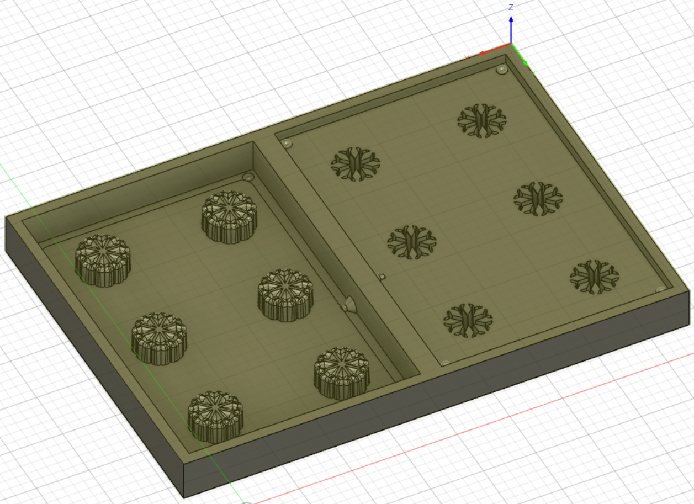
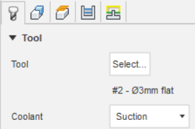
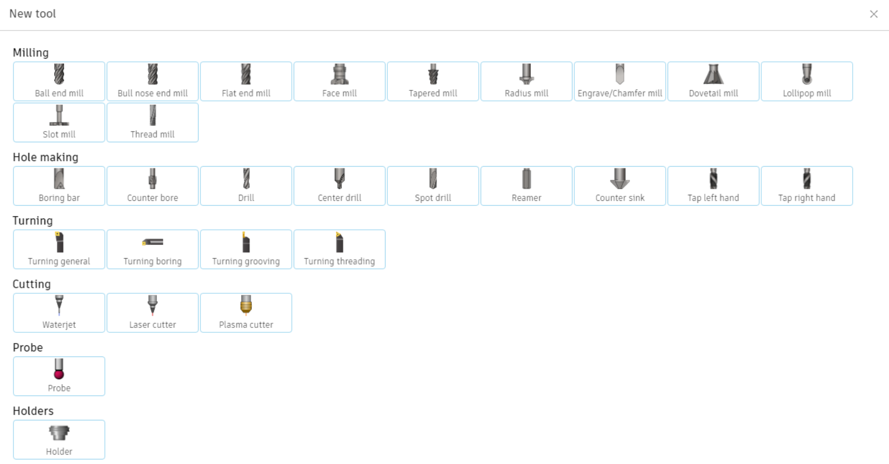
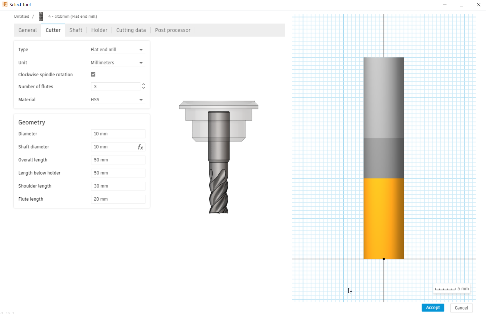
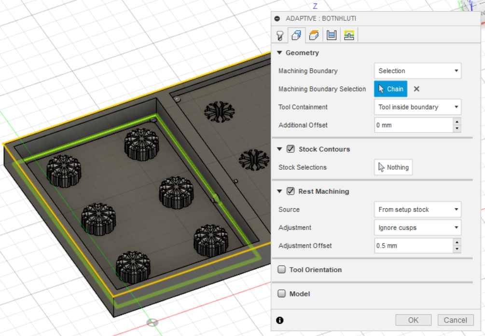
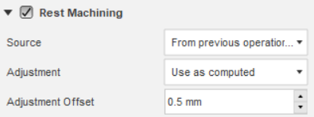

Í verkefni 5 átti að hanna, teikna, undirbúa og fræsa mót. Vegna covid takmarkana var ekki hægt að fræsa mótið, en í staðinn átti að skila simulation af framleiðslunni. Hópurinn samanstóð enn og aftur af Birtu, Davíð og Elísu. Verkefninu var skipt á milli hópmeðlima á þann hátt að Birta teiknaði hlutinn okkar, Davíð teiknaði pósitívu og negatívu til að gera mót fyrir hlutinn og ég sá um að gera toolpaths og simulation fyrir framleiðslu, ásamt því að skrásetja verkefnið á sameiginlega vefsíðu.
Til að gera skurðferla (e. toolpaths) fyrir fræsinn til að framleiða mótið fyrir klakaformið var stuðst við myndbönd 1 og 2
Teikningin af mótinu var fengin frá Davíð og til að hefja skurðferlagerð var byrjað á að smella á "Design" hnappinn efst í vinstra horninu og velja þar "Manufacture". Inni í "Manufacture" var valið "New setup" undir "Setup" valstikunni. Inni í setupinu þurfti að velja og stilla núllpunkt fyrir x, y og z ás. Þetta skiptir máli fyrir fræsinn þegar verið er að fara að framleiða hlutinn. Ásarnir voru stilltir á þann hátt sem sjá má á myndinni hér að neðan:
Því næst var komið að því að velja og gera skurðferla. Til að komast að réttum ferlum þurfti aðeins að prófa sig áfram, sem reyndist ansi tímafrekt. Til aðstoðar var notast við Google og til dæmis leitað eftir "CAM in fusion 360 complex shapes". Þessi síða kom til dæmis að góðum notum.
Niðurstaðan var að "Adaptive clearing", undir 3D valstikunni kom best út til að fræsa út mótið. Gerðir voru þrír mismunandi skurðferlar; einn fyrir neðri hluta mótsins, einn fyrir topphlutann af efri hluta mótsins og sá síðasti fyrir snjókornin í efri hluta mótsins.
Til að gera skurðferil með "Adaptive clearing" aðferðinni þurfti að byrja á að velja "Tool" sem fræsirinn notar til að fræsa. Smellt er á Select... hjá Tool, sem er það fyrsta sem sést eftir að "Adaptive clearing" er valið. Coolant er valið sem "Suction" eins og á fræsinum í FabLab.
Eftir að smellt er á Select opnast gluggi og í honum þarf að smella á plúsinn sem er ofarlega vinstra megin. Þá opnast eftirfarandi gluggi:
Þarna þarf að velja viðeigandi tól. Fyrir þetta verkefni var áætlað að fræsingin færi fram með bita með flötum haus, eins og raunin var í verkefni 4. Því var valið "Flat end mill". Þegar það er valið opnast gluggi og undir "Cutter" í þeim glugga eru eftirfarandi valmöguleikar:
Þarna þurfti að velja hversu breiður bitinn var. Þykktin var einfaldlega valin með því að prófa sig áfram, það þurfti að finna gott jafnvægi á milli hraðrar og nákvæmrar framleiðslu. Niðurstaðan var sú að fyrir fyrsta skurðferilinn, sem var fyrir neðri hluta mótsins, var valinn 3 mm þykkur biti. Sama stærð var valin fyrir næsta skurðferil, sem var fyrir hluta af efri hluta mótsins. Erfiðast var að finna stærð á bita til að fræsa út snjókornin, því þau voru með mikil smáatriði. Niðurstaðan var að nota þurfti 0.8mm þykkan bita til að skera þau út. Nú eru eflaust einhverjir hugsi, þar sem þetta er mjög þunnur biti. Staðreyndin var einfaldlega sú að ef valinn var stærri biti var ekki hægt að skera snjókornin út.
Það næsta sem þurfti að stilla í valmyndinni fyrir "Adaptive clearing" var að velja hvaða part átti að fræsa. Sjá mynd:
Fyrir fyrsta skurðferilinn var græni ramminn valinn og svo var "Tool containment" stillt á "Tool inside boundary". Þá fjarlægði fræsirinn allt sem fjarlægja átti innan græna rammans. Ekki voru settar inn fleiri stillingar fyrir þennan skurðferil, en sjá má myndband af hermun fyrsta skurðferilsins hér að neðan.
Fyrir næsta skurðferil var Tool og svæðið sem fræsa átti valið á sama hátt og fyrir skurðferilinn á undan. Valinn var rammi og stillt á að fræsa ætti innan hans. Ekki voru aðrar stillingar settar inn fyrir þennan skurðarferil, en sjá má myndband af hermun hans hér að neðan:
Þriðji og síðasti skurðarferillinn var heldur flóknari í útfærslu. Svæðið sem fræsa átti og "Tool" var valið á sama hátt og áður, en nú var bitinn 0.8mm í þvermál. Reynt var að gera skurðferilinn ótal mörgu sinnum á mismunandi vegu, með mis góðum árangri. Tölvan var lengi að reikna skurðarferlana út í hvert skipti, sem gerði þetta ferli mjög tímafrekt. Aðvörun sem fékkst gjarnan eftir að skurðarferillinn hafði verið að "processast" í langan tíma var: "Warning: Rest material adjustment reduced to maximum limit". Þetta var vandamál sem þurfti að googla og fékkst lausn á vandamálinu á þessari síðu. Þá, í stillingunum á "Adaptive clearing", þurfti til viðbótar við að velja svæðið sem fræsa átti að setja inn eftirfarandi stillingar í "Rest Machining" undir "Geometry" valglugganum:
Á þennan hátt tók þessi skurðarferill tillit til skurðarferilsins á undan, sem var nauðsynlegt í þessu tilfelli. Þar sem bitinn sem notaður var til að fræsa út snjókornin var einungis 0.8mm að þvermáli tók fræsingin á þessum hluta mjög langan tíma. Niðurstöðuna má sjá í eftirfarandi myndbandi:
Eftir að allir þrír skurðferlarnir voru tilbúnir og búið var að herma framleiðsluna á hverjum og einum var tekið upp myndband af hermun á öllum ferlunum í einu. Það má sjá hér að neðan. Eins og sjá má í myndbandinu er Fusion360 ansi þungt fyrir tölvuna sem verkefnið var framkvæmt á og það að keyra hermun og taka upp vídeó af henni á sama tíma varð til þess að þessi hermun laggar ansi mikið.
Í töflunni hér að neðan má sjá þann tíma sem fór í verkefni 5 hjá mér, eftir verkþáttum.
| Verkþáttur | Tími |
|---|---|
| Hugmyndavinna og verkefnaskipting | 2 klst |
| Útfæra skurðferla | 4 klst |
| Herma skurðferla og taka upp myndbönd | 1 klst |
| Skrásetning á sameiginlega vefsíðu | 2 klst |
| Skrásetning á eigin vefsíðu | 3 klst |
| Samtals | 12 klst |
"Toolpaths in Fusion360"
"CAM in fusion 360 complex shapes"
"Warning: Rest material adjustment reduced to maximum limit"